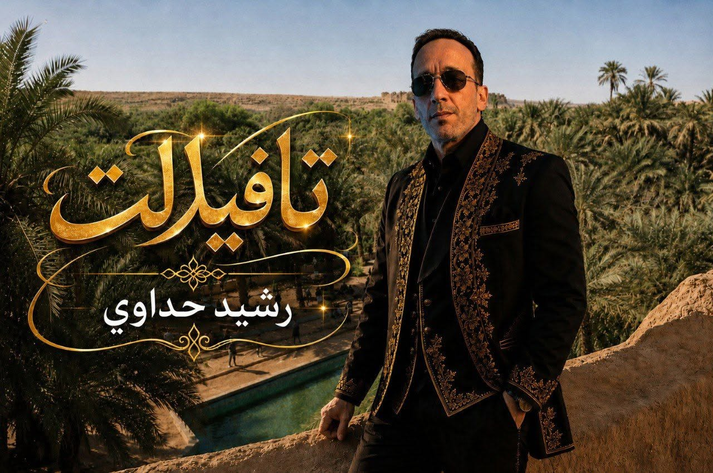
012026Disponible
Tafilalet — تافيلالت
Une création dédiée à la terre d’origine, à l’oued Ziz, aux oasis et à la mémoire de l’enfance.
ÉcouterRACHID HADDAOUI — ARTISTE MUSICIEN MAROCAIN
Auteur, compositeur, chanteur et joueur de oud et de guitare, Rachid Haddaoui fait dialoguer le patrimoine beldi du Tafilalet avec les couleurs gnawa et hassanies, dans une approche musicale contemporaine.
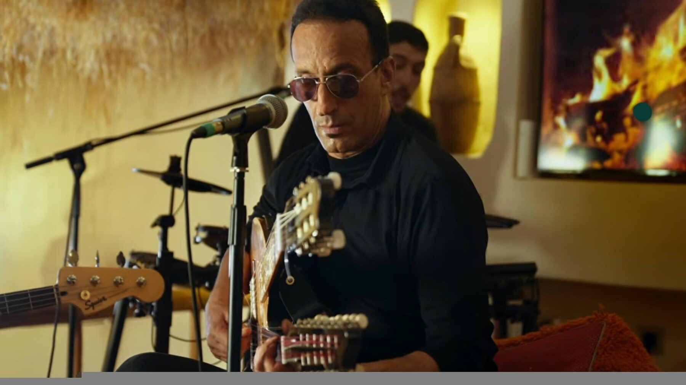
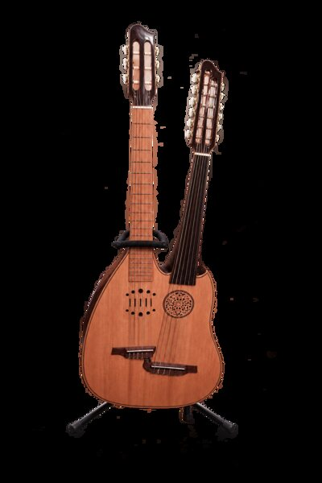
EXTRAIT À L’ÉCOUTE
Découvrez un extrait qui reflète l’identité artistique et la sensibilité musicale de Rachid Haddaoui.
SÉLECTION ARTISTIQUE
Un parcours artistique où se rencontrent mémoire, poésie populaire et recherche musicale. Explorez les œuvres par catégorie ou par année.

01Une création dédiée à la terre d’origine, à l’oued Ziz, aux oasis et à la mémoire de l’enfance.
Écouter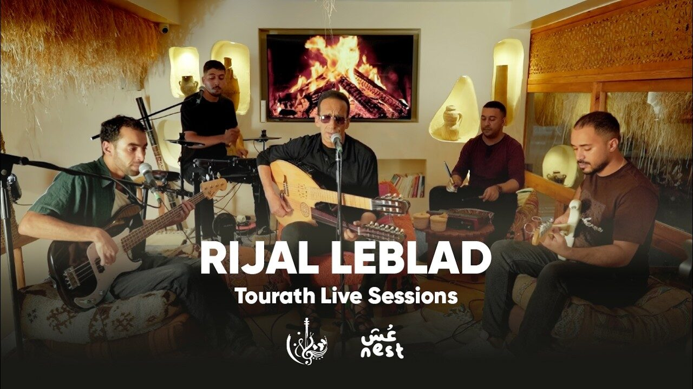
02 رِجال البْلادUne création patrimoniale où le beldi du Tafilalet rencontre l’énergie du rock contemporain et les rythmes gnawa.
Voir la chaîne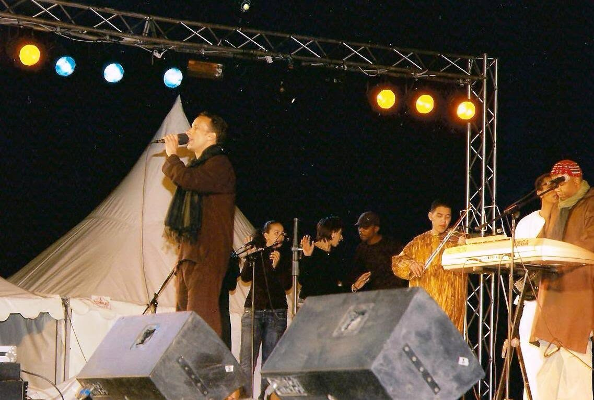
03 قضي يا المرضيUne collaboration vocale avec Khalid El Hamri, portée par une écriture populaire marocaine et une interprétation complice.
Découvrir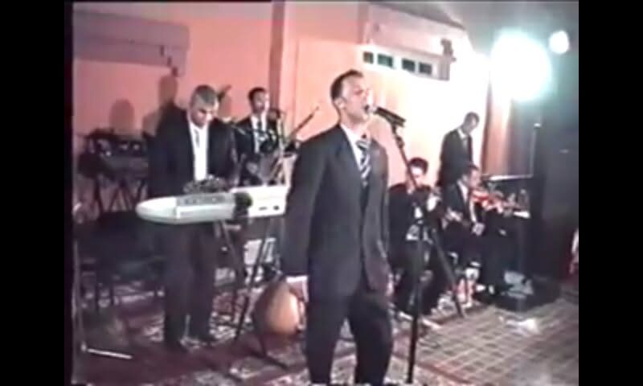
04 أنا مليتUne chanson à l’expression directe et sensible, inscrite dans une écriture musicale marocaine contemporaine.
Découvrir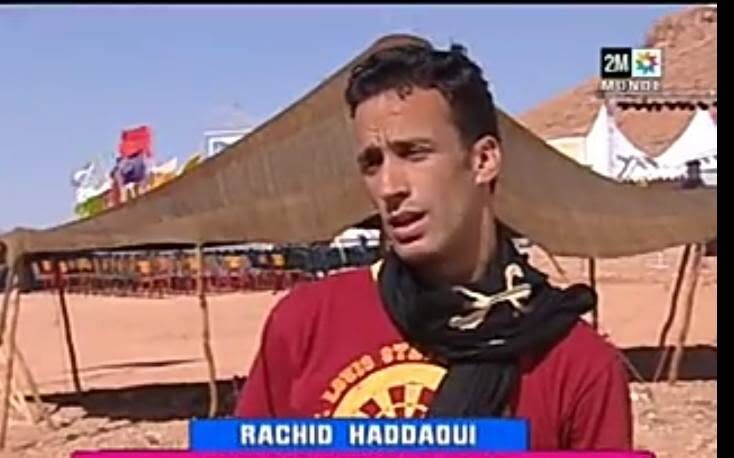
05 البدايةAprès des débuts fondés sur l’apprentissage autonome, puis enrichis par des cours auprès du professeur Idriss Ibn Al Bouazawi, cette première chanson engagée marque en 2001 le début public de son parcours.
Aucune œuvre ne correspond à ce filtre.
IMAGES DU PARCOURS
Une sélection de scènes, de sessions de création et d’archives retraçant les principales étapes du parcours artistique.
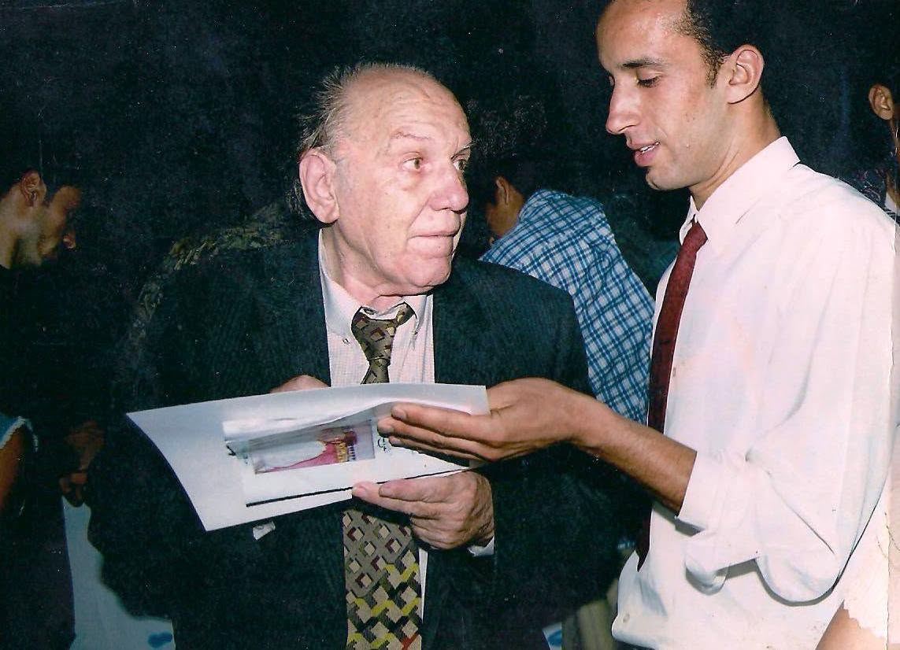
ARCHIVESRencontre artistique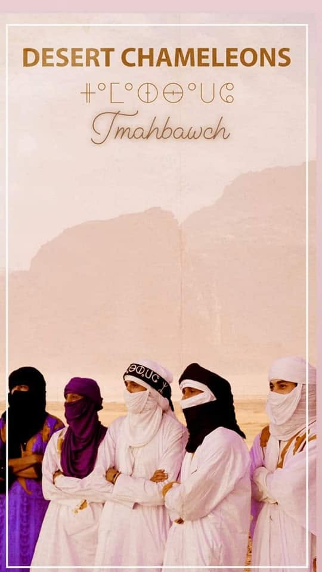
PROJETDesert Chameleons — Imahbawch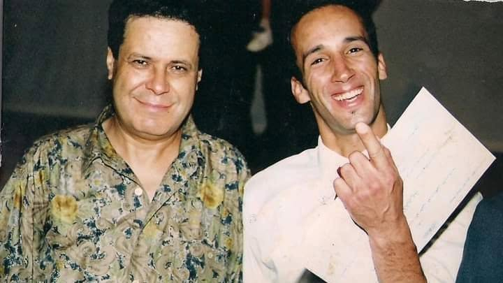
ARCHIVESMémoire du parcours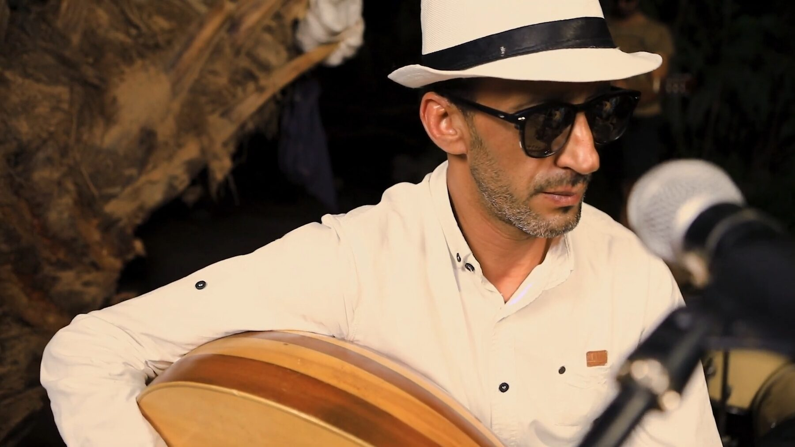
PORTRAITPortrait au oud LIVERijal Leblad — Live ARCHIVESPremières apparitions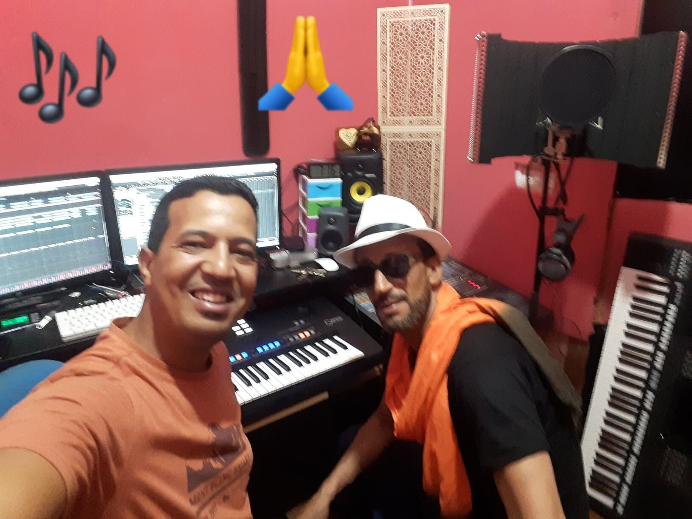
STUDIOEn studio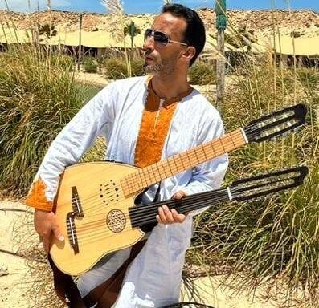
INSTRUMENTInstrument signature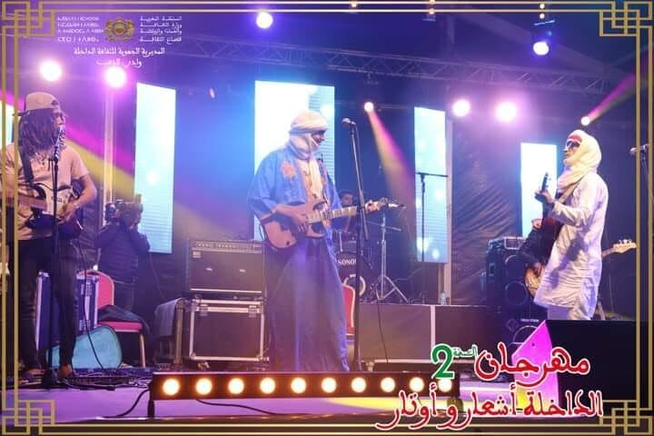
FESTIVALFestival à Dakhla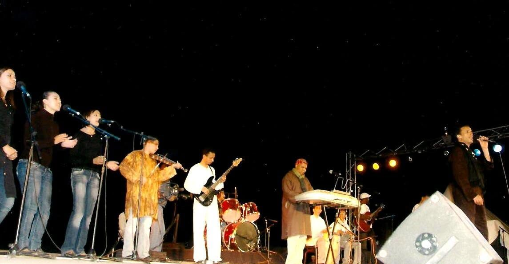
ARCHIVESConcert avec le groupe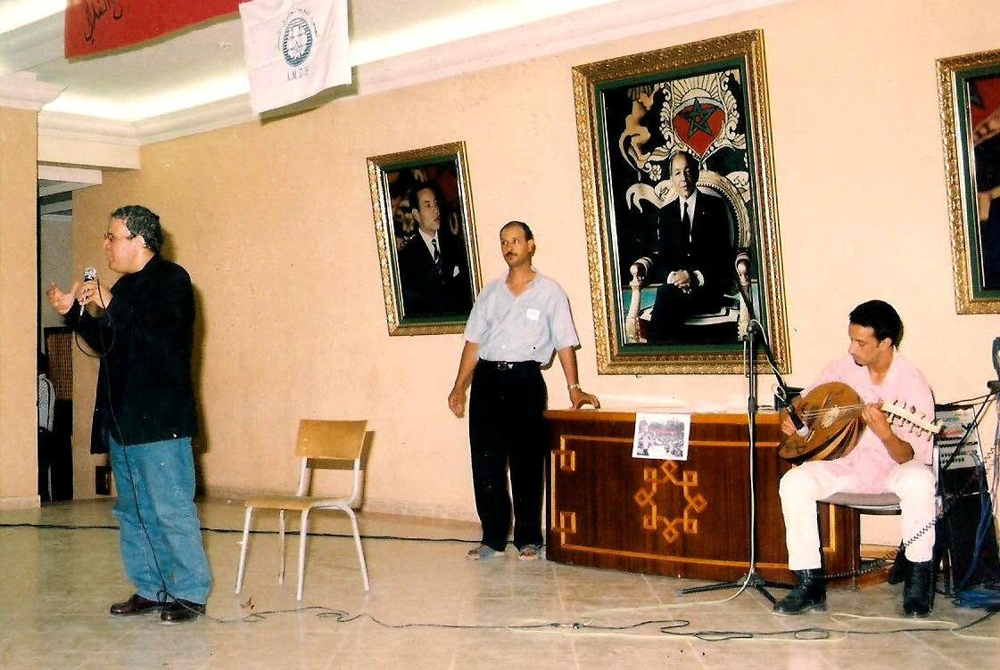
ARCHIVESUne étape du parcours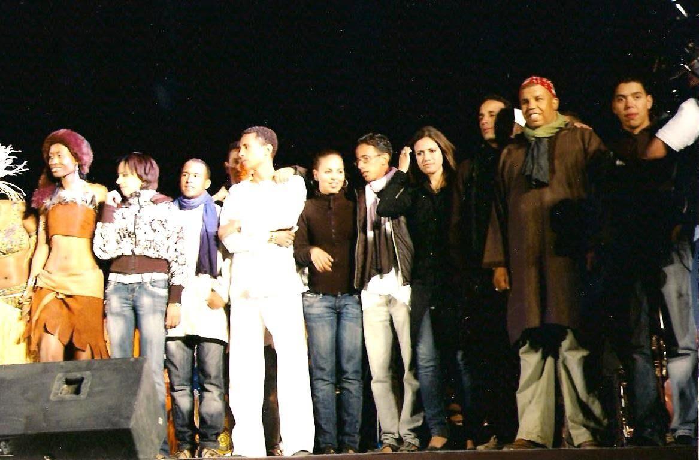
LIVEFin de concert LIVESur scène ARCHIVESArchives live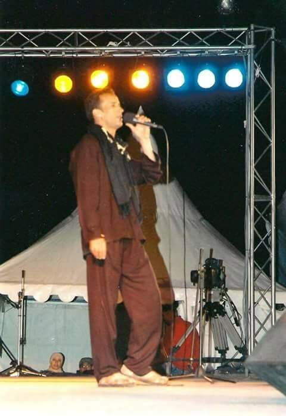
LIVEVoix & scène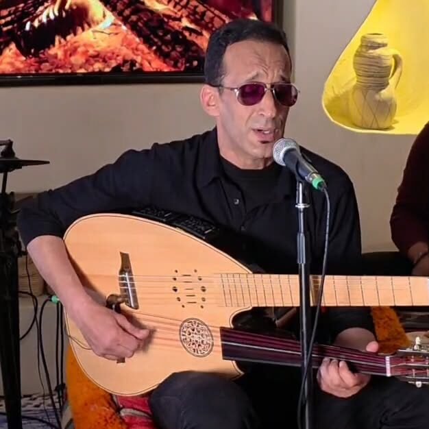
LIVETourath Live — Oud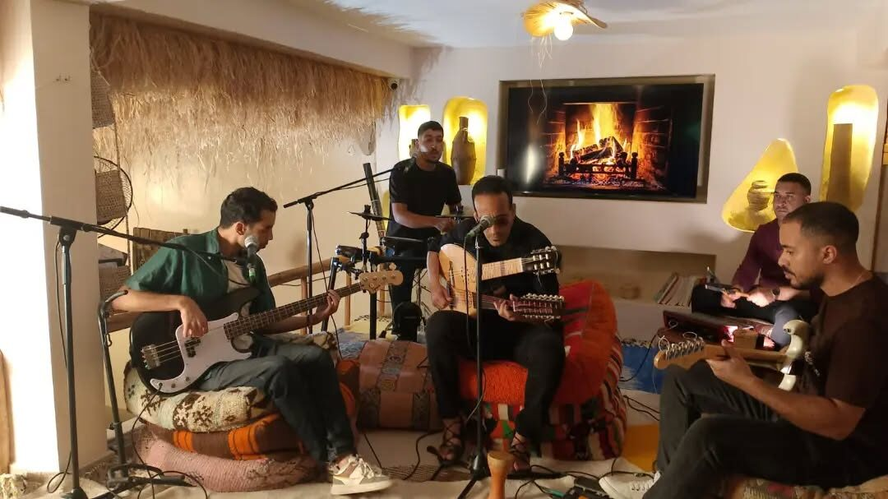
LIVETourath Live SessionsDOSSIER ARTISTIQUE
Consultez un dossier complet réunissant la formation, les compétences, les expériences scéniques et les participations médiatiques de Rachid Haddaoui.
PROGRAMMATION · PRESSE · COLLABORATIONS
Pour toute demande de programmation, d’entretien de presse ou de collaboration musicale, contactez l’artiste ou consultez ses plateformes officielles.